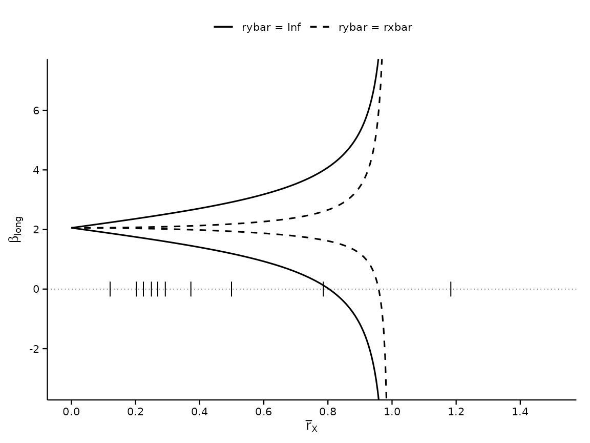
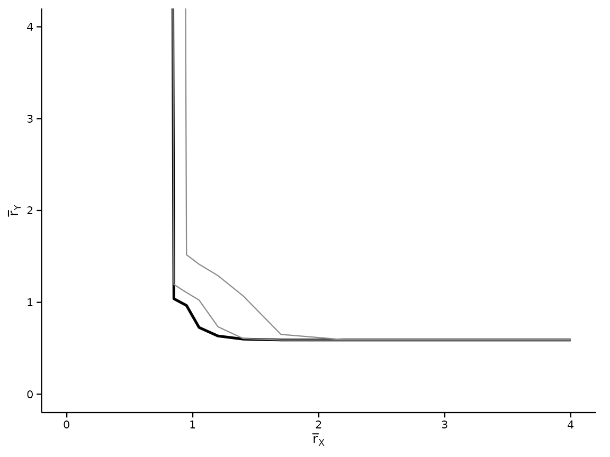
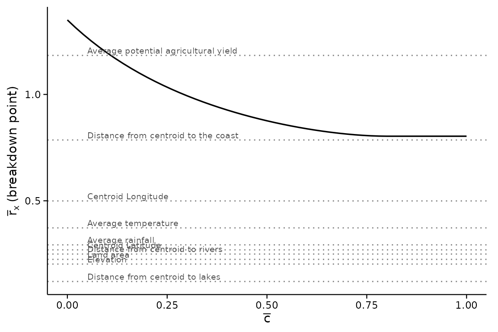
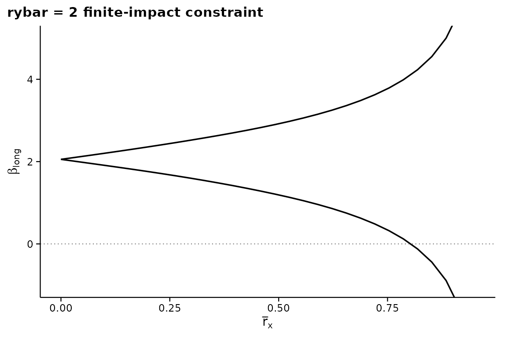

Replication: Diegert, Masten and Poirier (2026)
Source:vignettes/dmp2022-replication.Rmd
dmp2022-replication.RmdThis vignette reproduces every empirical table and figure of
Diegert, Masten and Poirier (2026), Assessing Omitted Variable
Bias when the Controls are Endogenous, using the bundled
bfg2020 data. We label each chunk with the corresponding
table/figure number in the paper.
library(regsensitivity)
library(ggplot2)
data(bfg2020)
bfg2020$statea <- factor(bfg2020$statea)
w1 <- c("log_area_2010", "lat", "lon", "temp_mean", "rain_mean",
"elev_mean", "d_coa", "d_riv", "d_lak", "ave_gyi")
labels <- c(
log_area_2010 = "Land area",
lat = "Centroid Latitude",
lon = "Centroid Longitude",
temp_mean = "Average temperature",
rain_mean = "Average rainfall",
elev_mean = "Elevation",
d_coa = "Distance from centroid to the coast",
d_riv = "Distance from centroid to rivers",
d_lak = "Distance from centroid to lakes",
ave_gyi = "Average potential agricultural yield"
)
form <- avgrep2000to2016 ~ tye_tfe890_500kNI_100_l6 +
log_area_2010 + lat + lon + temp_mean + rain_mean + elev_mean +
d_coa + d_riv + d_lak + ave_gyi + stateaTable 1, Panel C, column (5): breakdown points
For the Republican vote share outcome the paper reports:
- – the breakdown rxbar at .
- – the breakdown rxbar under (common maximal impact).
bp_conservative <- regsen_bounds(form, bfg2020, compare = w1,
cbar = 1)
bp_relaxed <- regsen_bounds(form, bfg2020, compare = w1,
cbar = 1,
rybar_expr = function(rx) rx)Side by side against the published values. published
holds the figures as printed in the paper, so the comparison is checked
on every build rather than asserted in prose:
# `digits` is the precision the paper actually prints each value to, given
# explicitly rather than inferred. Deriving it from format() is wrong:
# format() pads a vector to a common width, so format(c(0.804, 0.96)) is
# c("0.804", "0.960") and 0.96 would be held to a precision it was never
# printed at.
compare_published <- function(quantity, published, computed, digits) {
out <- data.frame(
quantity = quantity,
published = published,
computed = round(computed, 4),
stringsAsFactors = FALSE
)
out$difference <- round(out$computed - out$published, 4)
out$agrees <- abs(out$difference) <= 0.5 * 10^(-digits)
out
}
cmp <- compare_published(
quantity = c("rxbar^bp at cbar = 1",
"r^bp at cbar = 1, rybar = rxbar"),
published = c(0.804, 0.96),
digits = c(3, 2), # as printed in the paper
computed = c(bp_conservative$breakdown, bp_relaxed$breakdown)
)
knitr::kable(cmp, caption = "Breakdown points: this package vs DMP (2026).")| quantity | published | computed | difference | agrees |
|---|---|---|---|---|
| rxbar^bp at cbar = 1 | 0.804 | 0.8036 | -0.0004 | TRUE |
| r^bp at cbar = 1, rybar = rxbar | 0.960 | 0.9584 | -0.0016 | TRUE |
Both agree to the precision the paper prints. The
stopifnot() above is deliberate: if a future change moved
either number, this vignette would stop building rather than quietly
publishing a wrong replication.
Table 3: correlations between observed covariates
tbl3 <- calibrate_partial_r2(form, bfg2020, compare = w1)
tbl3$variable <- labels[tbl3$variable]
print(tbl3, row.names = FALSE)
#> variable R2
#> Average temperature 0.89381557
#> Centroid Latitude 0.87613192
#> Elevation 0.68089635
#> Average potential agricultural yield 0.64750896
#> Average rainfall 0.55877626
#> Distance from centroid to the coast 0.48721297
#> Centroid Longitude 0.43437429
#> Distance from centroid to rivers 0.13463383
#> Distance from centroid to lakes 0.09985706
#> Land area 0.09812881Matches the paper to three decimal places.
Table 4, column (5): rho_k calibration
tbl4 <- calibrate_rho(form, bfg2020, compare = w1)
tbl4$variable <- labels[tbl4$variable]
print(tbl4, row.names = FALSE)
#> variable rho
#> Average potential agricultural yield 118.33963
#> Distance from centroid to the coast 78.58110
#> Centroid Longitude 49.93006
#> Average temperature 37.26278
#> Average rainfall 29.28644
#> Centroid Latitude 26.92989
#> Distance from centroid to rivers 24.95888
#> Land area 22.45564
#> Elevation 20.25159
#> Distance from centroid to lakes 12.06453Each value matches the paper’s Table 4 to one decimal place.
Figure 1: Sensitivity analysis for Republican Vote Share
Left panel: bounds on as a function of ,
fig1L <- regsen_bounds(form, bfg2020, compare = w1, cbar = 1,
rxbar = seq(0, 0.99, length.out = 200))
plot(fig1L, ylim = c(-2, 8),
title = "Figure 1 (left): bounds at cbar = 1")
Right panel: breakdown frontier
fig1R <- regsen_breakdown(form, bfg2020, compare = w1,
cbar = seq(0, 1, 0.02))
plot(fig1R,
title = "Figure 1 (right): rxbar breakdown frontier")
Overlaying the calibration values
df_rho <- calibrate_rho(form, bfg2020, compare = w1)
df_rho$variable <- labels[df_rho$variable]
df_rho$rho_dec <- df_rho$rho / 100 # express as fraction
# Several covariates calibrate to similar rho, so labels placed at a
# common x collide into an unreadable stack. Staggering them across three
# x positions keeps every label rather than dropping the crowded ones.
df_rho <- df_rho[order(-df_rho$rho_dec), ]
df_rho$xpos <- rep(c(0.02, 0.36, 0.70), length.out = nrow(df_rho))
plot(fig1R) +
geom_hline(yintercept = df_rho$rho_dec, linetype = "dotted",
colour = "grey55", linewidth = 0.3) +
geom_text(data = df_rho,
aes(x = xpos, y = rho_dec, label = variable),
hjust = 0, vjust = -0.4, size = 2.5, colour = "grey25") +
coord_cartesian(ylim = c(0, 1.45))
Each dotted line is one covariate’s : how much of the treatment’s variation that single observed control explains. Reading the frontier against them is the point of the figure – a covariate sitting above the frontier would, if an unobservable were comparably important, be enough to overturn the sign.
Figures 2 and 3
Figure 2 of DMP (2026) reports the same analysis for the Cut
Spending on Poor outcome, and Figure 3 reports a sensitivity
analysis on the choice of calibration covariates. Both require
additional outcome variables that are not part of the
bundled bfg2020 slice. Once the full
Bazzi-Fiszbein-Gebresilasse replication data is loaded, the calls look
like:
# Hypothetical, given a column `cut_spending_poor`:
regsen_bounds(cut_spending_poor ~ tye_tfe890_500kNI_100_l6 + <controls>,
data, compare = w1, cbar = 1)
regsen_breakdown(cut_spending_poor ~ ...,
data, compare = w1, cbar = seq(0, 1, 0.02))For Figure 3, vary the compare argument to include /
exclude calibration covariates:
for (drop in w1) {
res <- regsen_bounds(form, bfg2020, compare = setdiff(w1, drop),
cbar = 1)
# collect & plot
}Bonus: identified set under
The paper notes that restricting the unobservable’s effect on the outcome shrinks the identified set considerably. Reproducing Figure 4 of the appendix style:
fy <- regsen_bounds(form, bfg2020, compare = w1, rybar = 2,
rxbar = seq(0, 0.95, length.out = 30))
plot(fy, ylim = c(-1, 5),
title = "rybar = 2 finite-impact constraint")